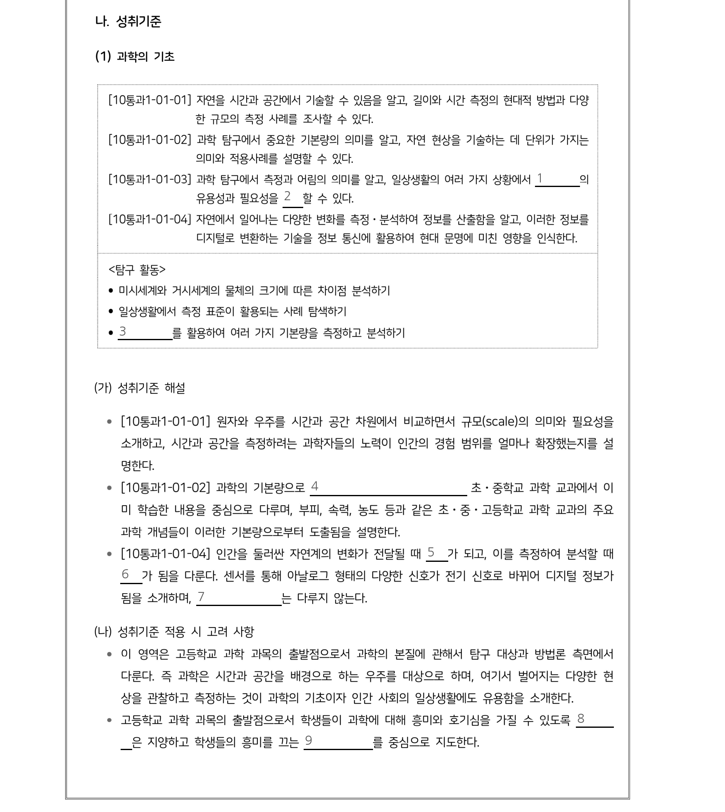
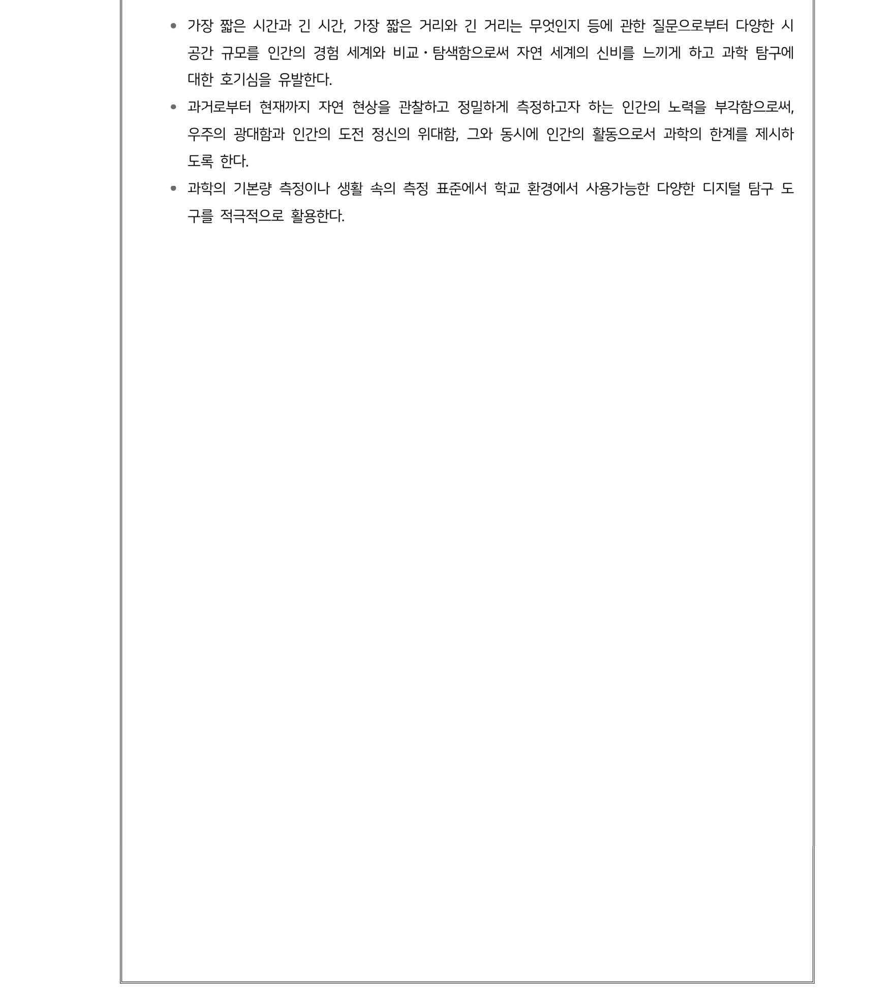
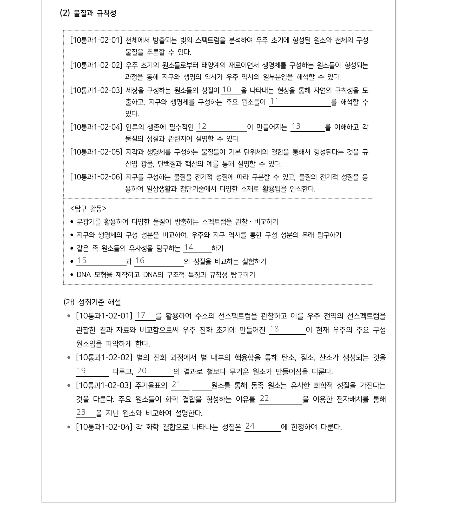
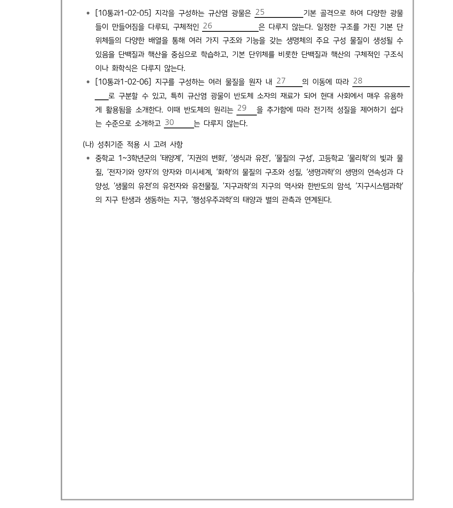
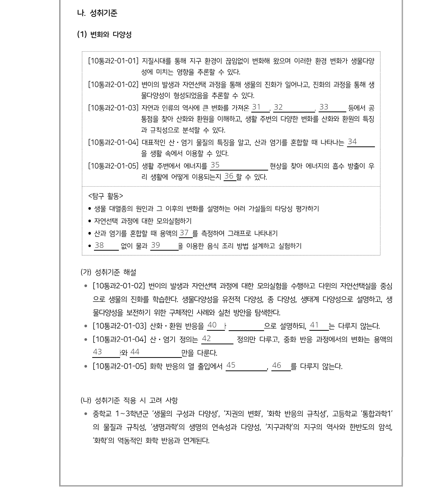
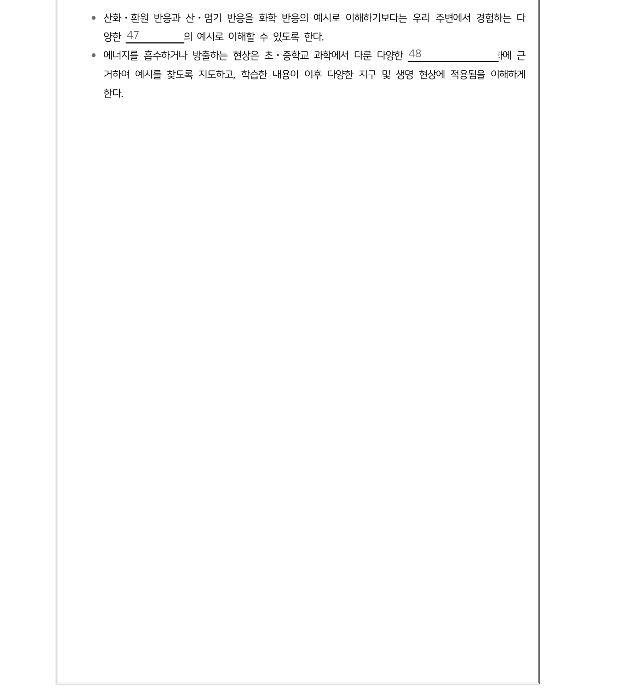
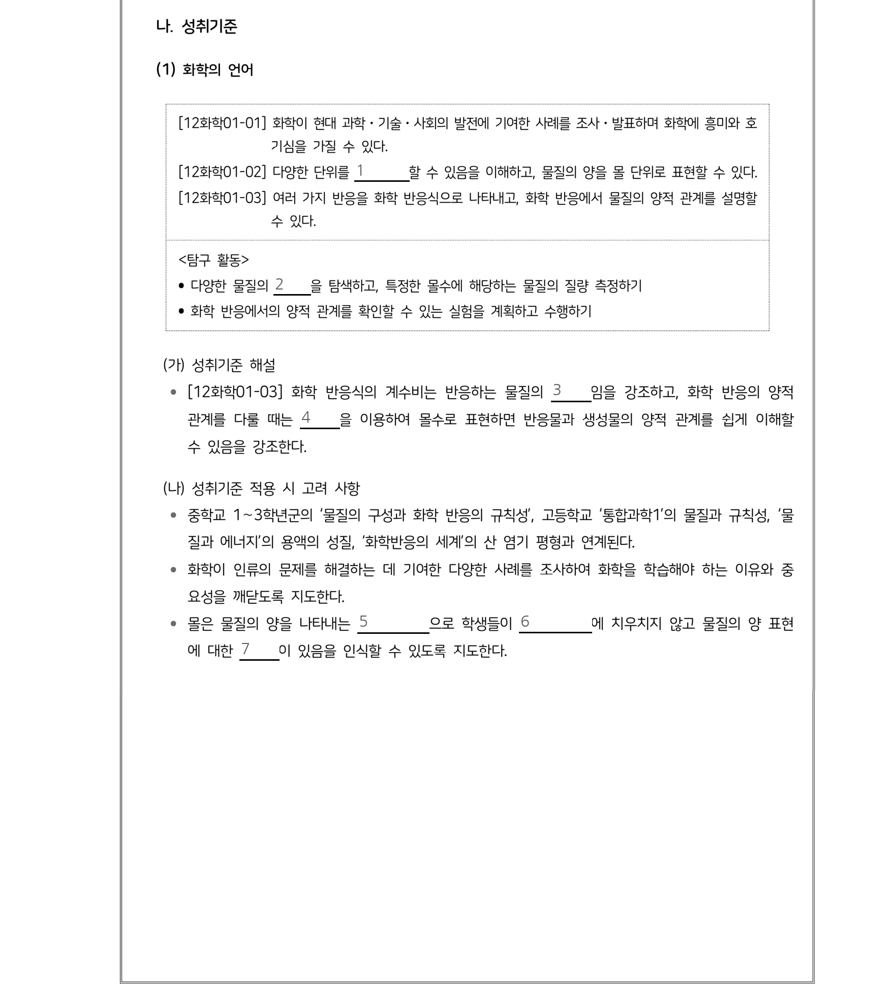
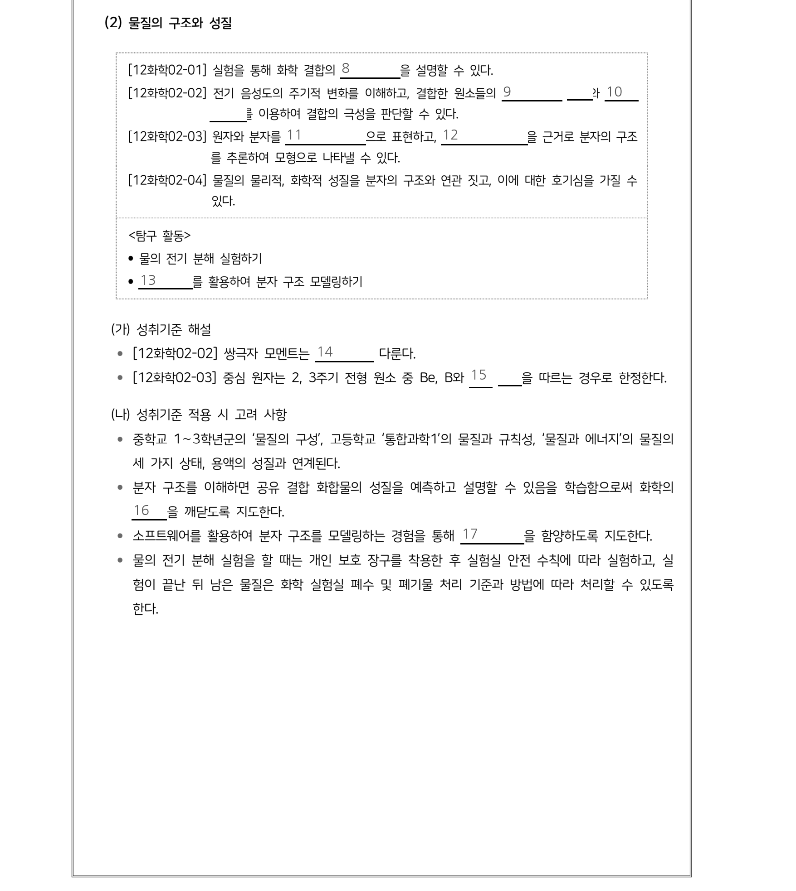
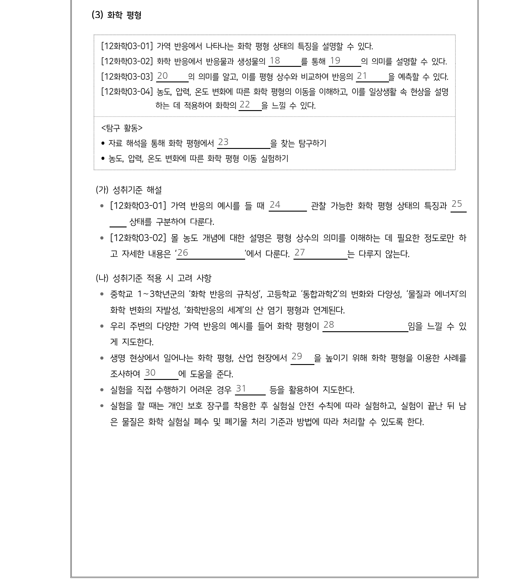
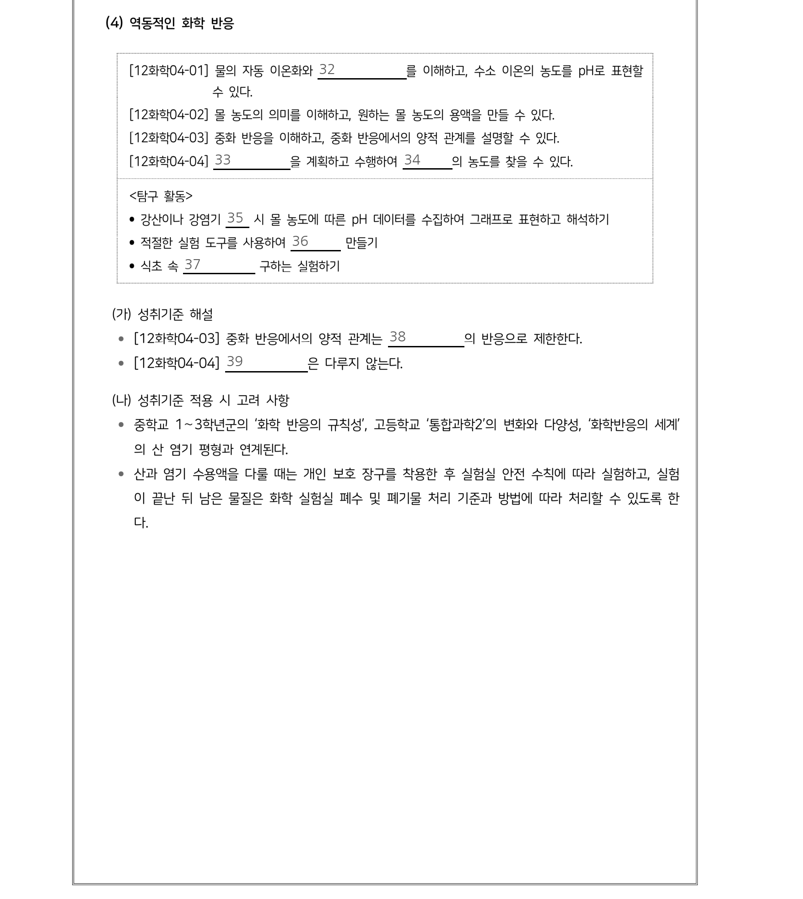

중학교 과학(물질) — 성취기준 · 성취기준 해설 · 적용 시 고려 사항 원문 12쪽이름 ______ 점수 ____
_12.png)
중학교 과학(물질) — 성취기준 · 성취기준 해설 · 적용 시 고려 사항 원문 13쪽이름 ______ 점수 ____
_13.png)
중학교 과학(물질) — 성취기준 · 성취기준 해설 · 적용 시 고려 사항 원문 14쪽이름 ______ 점수 ____
_14.png)
중학교 과학(물질) — 성취기준 · 성취기준 해설 · 적용 시 고려 사항 원문 15쪽이름 ______ 점수 ____
_15.png)
중학교 과학(물질) — 성취기준 · 성취기준 해설 · 적용 시 고려 사항 원문 16쪽이름 ______ 점수 ____
_16.png)
통합과학1·2 — 성취기준 · 성취기준 해설 · 적용 시 고려 사항 원문 28쪽이름 ______ 점수 ____

통합과학1·2 — 성취기준 · 성취기준 해설 · 적용 시 고려 사항 원문 29쪽이름 ______ 점수 ____

통합과학1·2 — 성취기준 · 성취기준 해설 · 적용 시 고려 사항 원문 30쪽이름 ______ 점수 ____

통합과학1·2 — 성취기준 · 성취기준 해설 · 적용 시 고려 사항 원문 31쪽이름 ______ 점수 ____

통합과학1·2 — 성취기준 · 성취기준 해설 · 적용 시 고려 사항 원문 35쪽이름 ______ 점수 ____

통합과학1·2 — 성취기준 · 성취기준 해설 · 적용 시 고려 사항 원문 36쪽이름 ______ 점수 ____

화학 — 성취기준 · 성취기준 해설 · 적용 시 고려 사항 원문 63쪽이름 ______ 점수 ____

화학 — 성취기준 · 성취기준 해설 · 적용 시 고려 사항 원문 64쪽이름 ______ 점수 ____

화학 — 성취기준 · 성취기준 해설 · 적용 시 고려 사항 원문 65쪽이름 ______ 점수 ____

화학 — 성취기준 · 성취기준 해설 · 적용 시 고려 사항 원문 66쪽이름 ______ 점수 ____

물질과 에너지 — 성취기준 · 성취기준 해설 · 적용 시 고려 사항 원문 75쪽이름 ______ 점수 ____

물질과 에너지 — 성취기준 · 성취기준 해설 · 적용 시 고려 사항 원문 76쪽이름 ______ 점수 ____

물질과 에너지 — 성취기준 · 성취기준 해설 · 적용 시 고려 사항 원문 77쪽이름 ______ 점수 ____

물질과 에너지 — 성취기준 · 성취기준 해설 · 적용 시 고려 사항 원문 78쪽이름 ______ 점수 ____

화학 반응의 세계 — 성취기준 · 성취기준 해설 · 적용 시 고려 사항 원문 87쪽이름 ______ 점수 ____

화학 반응의 세계 — 성취기준 · 성취기준 해설 · 적용 시 고려 사항 원문 88쪽이름 ______ 점수 ____

화학 반응의 세계 — 성취기준 · 성취기준 해설 · 적용 시 고려 사항 원문 89쪽이름 ______ 점수 ____